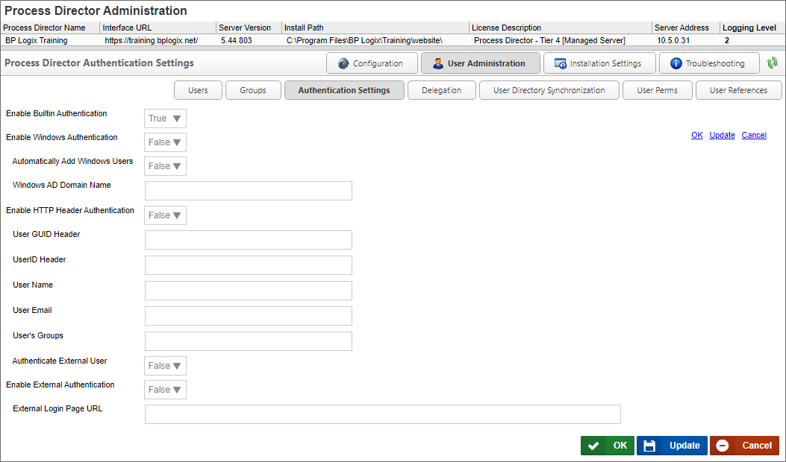

The Authentication Settings page enables you to determine the authentication methods available to users. As a default, Built-In authentication is automatically enabled. Other Authentication settings can be configured so that NTLM, Single-Sign-On, etc., are enabled.
This is the standard Process Director option, and is set to true by default.
When set to true, this setting enables Windows authentication, so that Single Sign-On is used to authenticate users via their Windows identity.
When set to true, new Windows users will be automatically added to Process Director.
The Active Directory domain name for the domain from which to add windows users to process Director.
When set to true, this setting enables authentication through the HTTP header, enabling users to log in via NTLM through an identity that is set in the HTTP header of the page request when a user navigates to Process Director with their browser. All users log in with a single identity specified in the header settings.
The value of the User GUID to use in the HTTP Header.
The value of the UserID to use in the HTTP Header.
The value of the User Name to use in the HTTP Header.
The value of the User email address to use in the HTTP Header.
A comma-separated list of Groups to which the User should be assigned to use in the HTTP Header.
This setting determines whether external users, i.e., users that aren't listed in the User database, should be authenticated.
This setting, when set to true, enables you to use a login page outside of Process Director.
The URL of the external login page.
Users must access Process Director with a User ID and password. A User ID must exist in the Process Director database before a login can occur. Process Director supports four types of user authentication methods.
This authentication mechanism uses your Microsoft Windows Domain to authenticate users. These users will be automatically added to the Process Director database after being successfully authenticated by your Windows Domain Server.
This authentication mechanism uses your LDAP server (e.g. Active Directory) to authenticate users. These users will be automatically added to the Process Director database after being successfully authenticated.
External users are those that are authenticated by a third party system. This includes products such as CA CleverPath Portal, CA Siteminder, Cafesoft Cams, and other external authentication systems using Process Director APIs. External users are automatically kept synchronized with the third party authentication system on every login.
More information about setting up authentication settings can be found in the User Authentication Options and SAML 2.0 (Federated Identity) Support sections of the Installation Guide.
Continue to the documentation for the Delegation page.